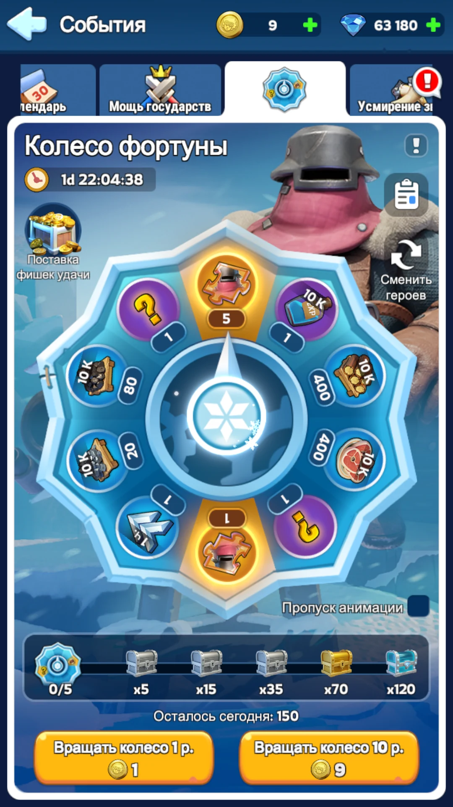
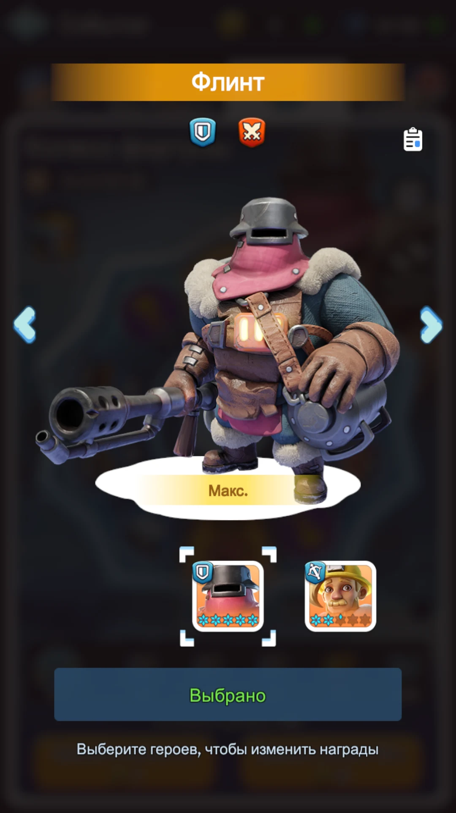

Не размазывайте крупные траты по случайным магазинам и ускорениям. Полное Колесо стоит дорого, но даёт одновременно фрагменты героя, гарантированные награды шкалы и книги навыков.
При активной игре гемов приходит достаточно много. Практический ориентир для активного аккаунта — накоплений хватает примерно на 9 полных Колёс из 10, поэтому покупать наборы только ради круток невыгодно.

1. Что даёт Колесо
Среднее ожидание за 120 круток с учётом гарантированных наград шкалы и случайных выпадений.
Шкала даёт мифические книги навыков Освоения и Экспедиции — один из основных способов их стабильно получать.
Последняя награда шкалы находится именно здесь. После неё дополнительной гарантированной награды за 150 круток уже нет.
2. Сколько гемов нужно
Полное Колесо
Одна крутка стоит 1500 гемов. Пакет из 10 круток стоит 13 500 — это скидка 10%. Поэтому бюджет на 120 круток без учёта бесплатных жетонов — 162 000 гемов.
Фактический расход может быть немного ниже, если использовать бесплатные жетоны Колеса.
Сколько фрагментов ждать
По вероятностям Колеса 120 круток дают в среднем около 180 фрагментов: 115 гарантированно со шкалы и около 65 случайно с самих круток.
Это примерно 900 гемов за один фрагмент. Для простого планирования можно округлять до правила: около 1 фрагмента на 1000 потраченных гемов. Результат конкретного Колеса может быть выше или ниже.
3. Какого героя крутить

4. Книги навыков — не побочная награда
Используются в Арене и Освоении. Герой без прокачанных навыков теряет значительную часть своей боевой ценности даже при хороших звёздах и снаряжении.
Работают в боях с войсками: PvP, ралли, гарнизоны и другие походы. Колесо одновременно развивает героя и обеспечивает книги для его навыков.